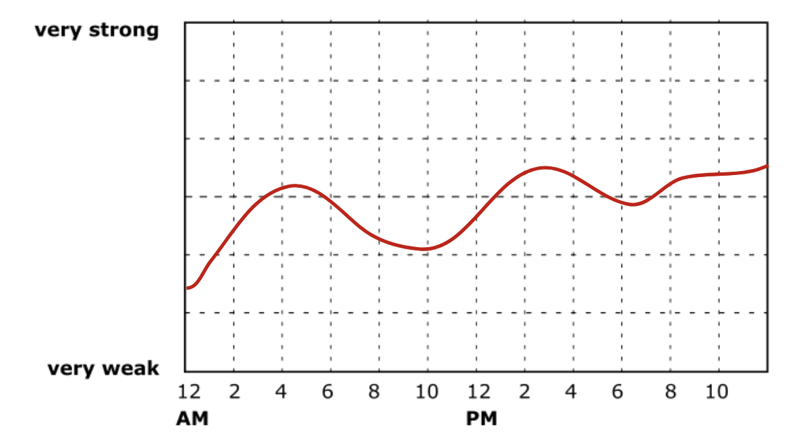

We will give you an overview of the most important tools in the study and how to use them.
You can select 14 experiment days within a time period of three weeks. If anything prevents you from adhering to the schedule, please let the experimenter know.
In addition to the questionnaires at the start and end of study, the study contains four main tasks for each experiment day (ideally before going to bed):
We would like you to describe what your daily activities are.
What to do? You are asked to document your daily activities over the course of an entire day in a short diary. To fill out the activity diary, please click on the link in the "Home" tab of the study portal.
When? The activity diary needs to be filled out every evening before going to bed.
How? Please give a short overview about your activities over the day. Write down the time interval, the kind of activity you have done (e.g. going for a run, walking, doing sports classes) and the intensity linked to the activity you were doing. To fill out the activity diary, please click on the link in the "Home" tab of the study portal.
We use a novel method called retrospective experience tracing to rate the intensity of different aspects of subjective experience across time. Each experience trace maps the intensity of an experience component against time.
What to do? You are asked to document how your experiences started and developed over the course of the entire day beginning from when you woke in the morning until the time before going to bed at night.
Each experience trace is headed by a question such as "How aware were you during the day of what was going on in your mind?".
To answer this question, you can draw the intensity of their experience in time on a 24h time scale.
Example of a retrospective experience trace measuring awareness intensity

You can leave gaps during times when you were sleeping. However, please indicate your experience when you were supposed to be sleeping but could not sleep.
When? Please take the time to complete the daily experience traces before going to bed in the evening, when the memory of your experiences from the day is still fresh.
How? To fill out the retrospective daily experience traces, please click on the link in the "Home" tab of the study portal.
We want to know how meditation influences your daily subjective experience.
What to do? Each meditation task will last around 20 minutes, including short instructional breaks between each section. Prior to your first meditation, listen to the first few minutes of the audio meditation guide to familiarise yourself with the structure of the session. After each meditation, report your experience by drawing on the graphs. Before each session, ensure that you are in a comfortable environment, undisturbed, with a place to sit comfortably for the next 20 minutes. Place the dreem headset on your head and launch the dreem mobile app. According to the instructions given by the app, ensure that the headset rests appropriately and with good contact to your scalp.
When? Please perform the meditation task once a day for a minimum of 7 days. Ideally, you can perform the meditation task when you fill out the daily experience diary and ratings before going to bed.
How? To perform the meditation task, please click on the link in the "Home" tab of the study portal.
We would like to record brain data during sleep to examine which brain activity is linked to social stress and sensory sensitivity in autism.
What to do? Please put on the EEG headband before going to bed and leave it on during the night. When you wake up in the morning, turn off the headband and charge it using the magnetic charger provided. Data are only uploaded to a cloud while the headband is charging, so it is important to charge the headband after every use. You are also asked to fill a sleep diary every morning to report how well you slept.
When? Please wear the EEG headband during the night following an experiment day.
How? Follow these instructions to learn how to use the Dreem headband.